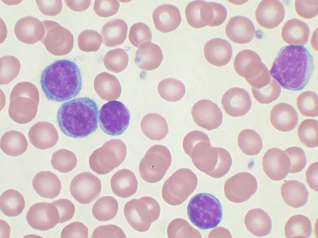
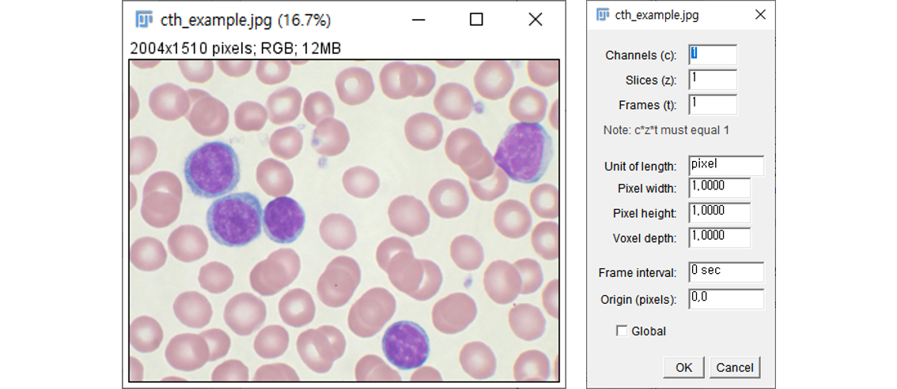
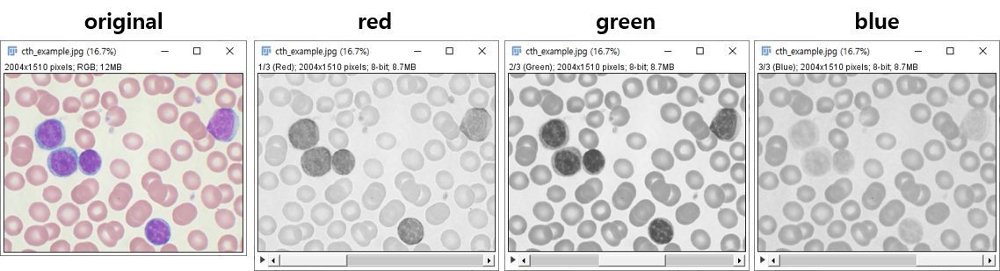
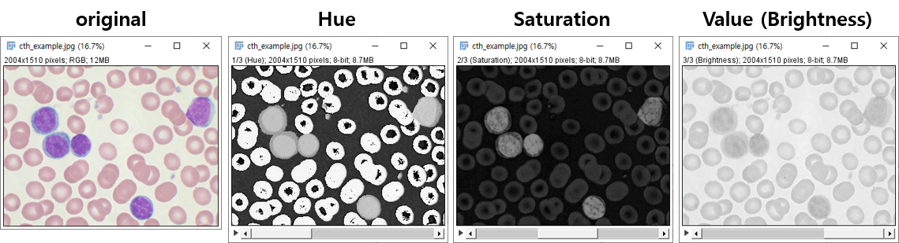
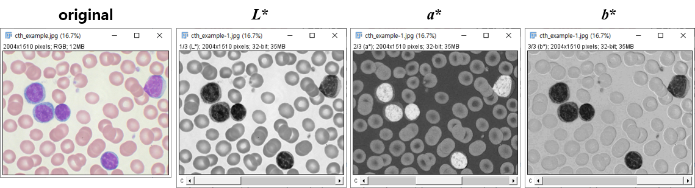
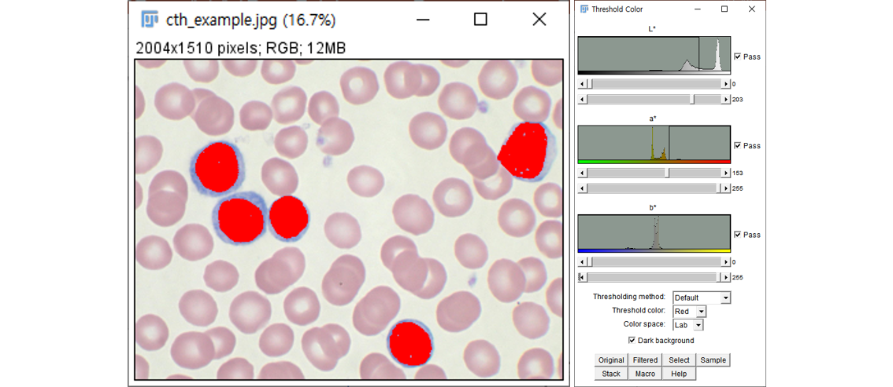
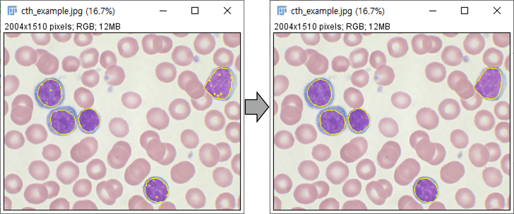
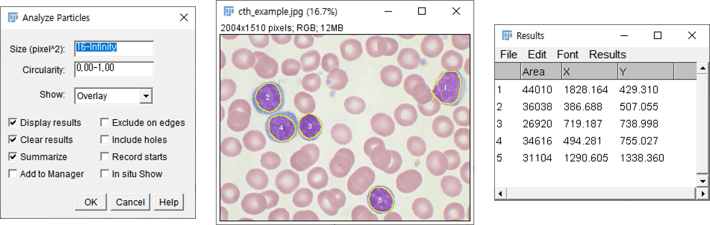

Reference
Python + ImageJ, Fiji Cookbook: Channel Merge
Class ImageProcessor
Class ColorProcessor
- color image의 RGB channel마다 다른 threshold를 적용해 이미지 색조를 수정하겠습니다.
- 전체 코드는 여기에서 받을 수 있습니다.
1. Color Threshold (GUI)
- ImageJ는 이미지의 특정 channel을 추출하여 수정할 수 있습니다.
- 여러 색의 개체가 한 이미지에 있고, 색상 등으로 이미지를 분석하는 것이 유리할 때가 있습니다.
- 아래 그림의 어두운 세포를 추출해보겠습니다. (원본 다운로드)

1.1. 이미지 채널 분할
- 위 예제 이미지를 다운받아 Image > Properties…로 확인해봅니다.
- channel이 1개, slice가 1개임을 확인할 수 있습니다.

1.1.1. RGB
- RGB 색상별 조작을 하기 위해 별도의 채널로 만들어줍니다.
- 제목 그대로 컬러 이미지를 Red, Green, Blue image stack으로 만듭니다.
Image > Type > RGB Stack

- image 윈도 아래 있는 슬라이드를 옮기며 어떤 채널이 효과적일지 봅시다.
- 원본의 어두운 세포와 주변의 다른 세포들간 대조(contrast)가 크면 분리하기 좋습니다.
- Blue channel은 세포별 구분이 잘 되지 않지만, red는 눈에 크게 뜨입니다.
- 찾으려는 cell은 보라색이라 blue가 구분이 잘 되어야 할 듯 한데 red, green에서 차이가 납니다.
- 전반적으로 우리가 찾는 cell을 제외한 전역에 red, green이 깔려 있기 때문입니다.
1.1.2. HSV(HSB)
- 이미지를 RGB channel 외에 다른 방식으로도 분할할 수 있습니다.
- 원본 이미지에 Image > Type > HSB Stack을 지정한 후 채널 분할을 수행하면 Hue (색상), Saturation (채도), Brightness (or Value. 명도)로 구분되는 채널이 얻어집니다.

1.1.3. 이미지 채널 분할: LAB
- 내친 김에 LAB 방식으로도 분할해 봅시다.
- 우리가 집중하고자 하는 세포가 가장 잘 드러나는 것이 목적이니 후보는 많을 수록 좋습니다.
Image > Type > Lab Stack

1.2. 채널을 이미지로 저장
- Image > Stacks > Stacks to Images 를 통해 분할한 채널을 개별 이미지로 저장할 수 있습니다.
1.3. 채널 병합
- 분할된 채널은 다음과 같은 두 가지 방법으로 병합될 수 있습니다.
- Image > Color > Stack to RGB : 분할된 이미지가 사라집니다.
- Image > Type > RGB Color
- 1번 방식은 채널 분할 방식에 관계없이 정상적인 이미지로 병합됩니다.
그러나 2번 방식은 RGB 외의 HSV나 LAB 방식엔 통용되지 않으니 주의가 필요합니다. - 단, 지금 수행하고자 하는 분석은 채널 병합을 하지 않아도 됩니다.
2. Color Threshold (GUI)
- Color Threshold를 통해 색상을 기준으로 개체를 선택할 수 있습니다.
- 앞서 LAB 방식의 $a^*$에서 어두운 cell이 잘 분리되었으니 이를 활용해봅시다.
- Image > Adjust > Color Threshold…를 실행하고 다음과 같이 조정해 봅니다.
- $$ L^* $$ : 0
203, $$a^* $$: 153255, $$b^* $$: 0~255

- $$ L^* $$ : 0
- 버튼별 기능은 다음과 같습니다.
- Pass : 체크시 thresholds 내부(band-pass), 해제시 외부(band-reject) 선택.
- Thresholding Method : Threshold 방법 16가지 선택
- Threshold Color : 선택영역 표시 (Red, Black, White, Black&White)
- Color space : HSB, RGB, CIE Lab or YUV
- Dark background : 체크시 밝은 부분 선택, 해제시 어두운 부분 선택
- Original : 원본 이미지 복구 및 버퍼 업데이트
- Filtered : 필터링 결과(RGB) 보여주기.
- Select : 필터링 결과로 ROI 생성. Process > Binary > Options… 설정을 따름.
- Sample : (experimental) 사용자 정의 ROI에 맞춰 Thresholding 수행
- Stack : (만약 있다면) 다른 slice에 현재 설정 적용.
- Macro : 현재 세팅을 Macro에 저장. Plugins > Macros > Record 실행시에만 작동.
- Help : 빌트인 도움말 창 열기.
3. Create Selection (GUI)
ImageJ User Guide: Manipulating ROIs
ImageJ Particle Analysis
3.1. 선택영역 다듬기
- 일부 particle내부에는 hole이 있고, 선택하지 않을 작은 점 단위도 있습니다.
- Edit > Selection > Enlarge…에서 6 px과 -6 px을 번갈아 적용합니다.
- positive value를 선택하면 hole이 메워지고, negative로 외곽선을 원상복구합니다.

3.2. 선택영역 분석
- Select로 threshold를 ROI로 변경합니다.
- Analysis > Set Measurements…에서 Area와 Centroid를 선택합니다.
- Analysis > Analyze Particles…로 cell의 면적과 위치를 분석합니다.
- 가로세로 4 x 4 미만의 pixel은 noise로 간주합니다: size의 최소값에 16을 넣습니다.
- 분석된 세포와 결과를 매칭하기 위해 Show:에서 Overlay를 선택합니다.
- 분석 결과 이미지와 표가 동시에 출력됩니다.
